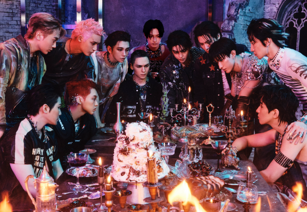
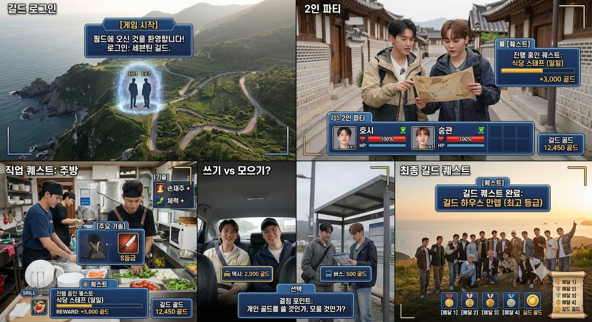
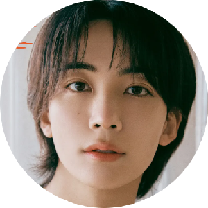
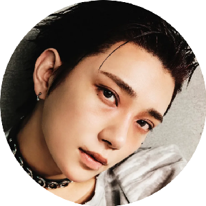
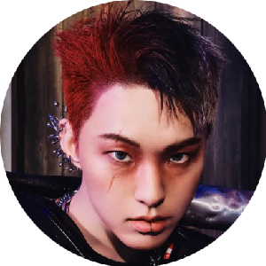
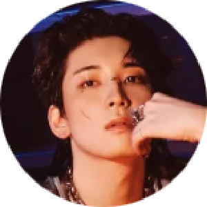
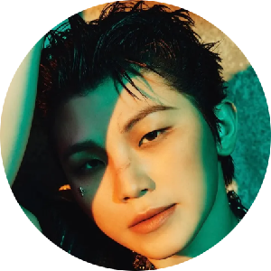
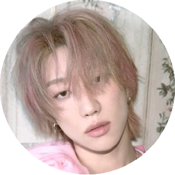
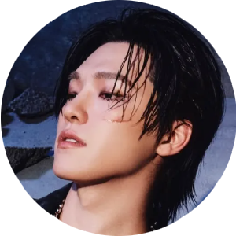

LOGIN
TRAVEL × RPG × QUEST
SEVENTEEN'S OWN GUILD ADVENTURE
길드명 : SEVENTEEN
SEVENTEEN은 13명의 플레이어로 이루어진 하나의 길드.
이 게임에는 정해진 접속 인원이 없다.
13명의 플레이어 중 오늘 로그인한 멤버들이 하나의 파티를 구성하며 새로운 게임을 시작한다.
기존의 퍼포먼스팀, 보컬팀, 힙합팀부터 멤버들의 조합에 따라 새롭게 만들어지는 다양한 유닛까지.
누가 로그인하느냐에 따라 매번 새로운 파티가 만들어지고,
그 조합만의 케미와 플레이가 새로운 이야기를 만들어낸다.
게임의 무대 역시 한곳에 머물지 않는다.
대한민국은 물론, 해외에서도 플레이어가 로그인할 수 있다면 게임은 계속된다.
로그인한 멤버들은 새로운 지역을 탐험하고, 퀘스트를 수행하며 골드를 획득한다.
그리고 획득한 골드와 플레이의 결과는 다음 플레이어의 여행에 영향을 준다.
13명의 플레이어가 항상 함께할 필요는 없습니다.
장소가 달라도, 로그인하는 멤버가 달라도, SEVENTEEN의 게임은 계속됩니다.
13 PLAYERS.
ONE GUILD.
EVERY LOGIN, A NEW ADVENTURE.
STORYBOARD

여행자는 주어진 돈으로 움직이는 것이 아니라 직접 획득한 GOLD로 자신의 여행을 만들어간다.
GUILD
13 MEMBERS.
ONE GUILD.
SEVENTEEN 전체가 하나의 '길드'가 된다. 하지만 모든 멤버가 매회 함께 움직이지는 않는다. 매회 2~13명의 멤버가 하나의 파티가 되어 각자의 여행을 시작한다. 한 회의 플레이 결과가 다음 회차, 그리고 길드 전체의 자산에 영향을 준다.
PARTY
13명의 멤버가 모두 게임에 참가하지 않아도
SEVENTEEN이라는 길드는 유지된다.
서로 다른 멤버 조합을 통해 새로운 케미를 만들고,
각자의 스케줄에 맞춰 유연하게 제작할 수 있는 포맷을 설계한다.
MEMBERS
닉네임 : S-COUPS

닉네임 : JUNGHAN

닉네임 : JOSHUA
닉네임 : JUN

닉네임 : HOSHI

닉네임 : WONWOO

닉네임 : WOOZI

닉네임 : THE 8
닉네임 : MINGYU
닉네임 : DK
닉네임 : SEUNGKWAN
닉네임 : VERNON

닉네임 : DINO
GAME
여행의 모든 선택에는 GOLD가 붙는다.
제작진이 플레이어에게 오늘의 퀘스트를 제시한다.
다양한 체험을 통해 GOLD를 획득한다.
획득한 골드로 모든 여행 경비를 지불한다.
이동수단과 여행지를 직접 선택한다.
퀘스트 성공시 개인 또는 길드의 자산으로 축적된다.
QUEST
지역 특산물 획득하기
특정 장소에서 퀘스트 아이템 찾기
로컬 시장에서 제한된 시간안에 필요한 식재료 구매하기
제한시간 내 목적지 도착하기
다른 팀에게 아이템 전달하기
지역 전통 게임 대결하기
개인 GOLD를 건 미니게임
지역의 비밀 장소 발견하기
특정 랜드마크 찾아가기
목공, 도자기 만들기
전통주 만들기
지역 홍보물 제작하기
지도 조각찾기
지역 역사 문제 맞추기
NPC의 힌트를 이용해 다음 장소 찾기
GOLD
퀘스트를 수행하고, GOLD를 획득하면 여행이 시작된다.
제작진은 미리 여행 경비를 지급하지 않는다.
플레이어들은 다양한 미션을 하고,
그 결과에 따라 GOLD를 획득한다.
벌어들인 GOLD의 사용처 역시
멤버들의 선택에 맡긴다.
본인이 원하는 음식, 이동수단, 쇼핑 등에 사용.
멤버들이 함께 모은 GOLD로 모두가 사용할 수 있는 특별한 경험을 구매.
MOVE
같은 목적지라도 어떻게 갈지는 멤버들의 선택.
BICYCLE
GOLD를 아끼며 직접 이동하는 가장 자유로운 수단.
BUS
가장 저렴한 이동수단. 남은 GOLD를 아낄 수 있다.
SUBWAY
저렴한 비용으로 도시 곳곳을 빠르게 이동한다.
TAXI
비용은 증가하지만 시간을 절약할 수 있다.
MOTORCYCLE
좁은 길도 빠르게 이동하는 민첩한 이동수단.
CAR
더 자유로운 이동을 위해 차량을 선택한다.
KTX
장거리 이동을 위해 GOLD를 투자한다.
BOAT/SHIP
특별한 이동 경험을 위한 수상이동수단.
FLIGHT
가장 빠르지만 가장 많은 GOLD가 필요하다.
CABLE CAR
목적지까지의 이동도 하나의 여행 경험이 된다.
FORMAT
PARTY
오늘의 멤버 2~3명이 한 팀을 구성한다.
EXPERIENCE & QUEST
다양한 체험과 퀘스트를 통해 여행에 필요한 GOLD를 번다.
TRAVEL
직접 번 GOLD로 이동, 식사, 숙박 등을 해결한다.
GUILD
일부 GOLD는 길드 공금으로 축적되어 다음 여행에 영향을 준다.
GUILD TREASURE
시즌 동안 모은 GOLD는
마지막에 하나의 TREASURE가 된다.
매회 획득한 GOLD는 각자의 선택을 통해,
일부를 길드 공금으로 축적한다.
시즌이 끝나는 순간까지 쌓인 GOLD는
실제 금액으로 환산되어 최종 보상이 된다.
시즌 동안 길드가 모은 GOLD의 총액을 실제 금액으로 환산한다.
마지막 선택은 멤버들의 몫이다.
INSIGHT
13명이 모두 모이지 않아도 지속 가능한 포맷
SEVENTEEN의 실제 스케줄 특성을 고려해 2~13명 단위의 파티 구조를 설계한다. 멤버 한 명의 스케줄 변화가 전체 촬영을 중단시키지 않는 구조다.
멤버 조합 자체가 콘텐츠가 된다
매회 다른 멤버 조합으로 구성될 수 있기 때문에 새로운 케미와 관계성이 자연스럽게 만들어진다.
GOLD가 쌓일수록 세계관이 확장된다
개인의 선택뿐 아니라 길드 전체의 자산이 누적되면서 장기적인 서사를 만든다.
여행 예능과 게임의 결합
실제 여행에서 발생하는 변수에 RPG의 퀘스트와 경제 시스템을 결합한다. 결과적으로 '어디로 가느냐'보다 '어떻게 벌어서 어떻게 쓰느냐'가 이야기의 중심이 된다.
EP.01
0 GOLD로 시작하는 첫 번째 여행
SEOUL → NAMYANGJU
START WITH 0 GOLD.
EARN YOUR WAY TO THE DESTINATION.
서울에서 출발한 멤버들은 0 GOLD를 가진 채 첫 번째 여행을 시작한다.
목적지는 서울 근교의 남양주 능내역.
제작진이 교통비와 여행 경비를 미리 지급하지 않는다.
멤버들은 이동하는 과정에서 다양한 QUEST를 수행하고 GOLD를 획득해야 한다.
그리고 획득한 GOLD를 어디에, 얼마나 사용할지는 멤버들의 선택이다.
START GOLD : 0 G
MISSION : 남양주 능내역에 도착하라.
- 서울에서 출발
- 목적지 : 남양주 능내역
- 제작진의 교통비 지원 : 0 GOLD
- 이동과 식사에 필요한 비용은 직접 해결
처음부터 충분한 GOLD를 가지고 시작하는 것이 아니라, 0 GOLD에서 직접 여행을 만들어가는 것이 첫 번째 규칙이다.
이번 회차에서는 별도의 직업 체험 대신 이동 과정 자체를 GOLD 획득의 기회로 만든다.
성공 시 BONUS GOLD 획득
획득한 GOLD는 단순한 점수가 아니다.
GOLD = 실제 여행에서 사용할 수 있는 자원
멤버들은 이동 과정에서 계속해서 선택해야 한다.
멤버들은 현재 보유한 GOLD와 앞으로 획득할 수 있는 GOLD를 고려해 직접 이동 방법과 소비 계획을 결정한다.
GOLD를 획득하면서 남양주로 이동한다.
서울에서 출발해 대중교통과 자전거를 적절히 활용하고, 이동 중 등장하는 QUEST를 수행하며 GOLD를 추가로 획득한다.
필요한 경우 획득한 GOLD로 식사나 이동 비용을 지불한다.
여행이 진행될수록 이 과정이 반복된다.
능내역에 도착하면 이번 여행의 GOLD를 최종 정산한다.
이번 회차에서 남은 GOLD는 개인의 기록으로 끝나지 않는다.
일부 GOLD는 GUILD TREASURE에 축적되어 다음 회차와 시즌 전체의 여행에 영향을 준다.
TUTORIAL EPISODE
EP.01은 LOGIN의 게임 시스템을 시청자에게 처음 소개하는 TUTORIAL EPISODE다.
복잡한 직업 체험이나 대규모 미션보다 QUEST를 수행하고 → GOLD를 획득하고 → 직접 선택하고 → 소비하는 과정 에 집중한다.
첫 회부터 시청자는 하나의 질문을 따라가게 된다.
“과연 이 멤버들은 0 GOLD에서 시작해 얼마나 많은 GOLD를 벌고, 어떻게 여행을 완성할 수 있을까?”
이후 회차에서는 더 다양한 QUEST와 멤버들의 선택, 그리고 누적되는 GUILD TREASURE를 중심으로 게임의 규모를 확장한다.
EDITING
RPG GAME UI를 활용한
예능형 편집
실제 게임처럼 퀘스트, GOLD, HP, 이동거리,
현재 위치 등의 정보를 화면에 그래픽으로 표시한다.
멤버들의 선택 순간에는 게임 UI를 삽입하여
시청자가 함께 선택지를 고민할 수 있도록 구성한다.
체험 & 퀘스트 → GOLD 획득 → 소비 → 여행의 결과가
하나의 게임 로그처럼 연결되도록 편집한다.
TEASER
LOGIN × SEVENTEEN
TEASER / MAIN CONTENT / SHORT FORM
본 페이지는 포트폴리오를 위한 SEVENTEEN × LOGIN 자체 콘텐츠 기획 제안입니다.